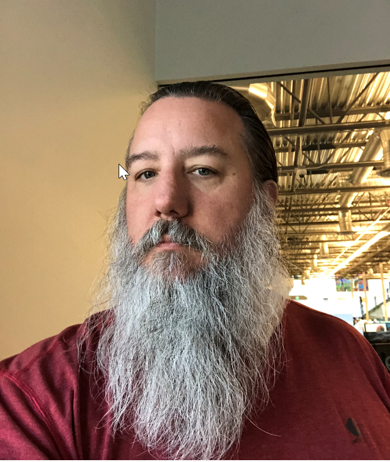

About Me

I was born in Grants Pass, Oregon on April 5th of 1969, the son of Gene and Glenda Flickinger. I have two siblings, whose names are Robert and Kelly (Robert has since passed away). I currently live in Chandler Arizona. I have been living in Arizona for over 15 years, and I've come to love it here.
My hobbies include playing computer games, practicing marksmanship with handguns, rifles and bows. I also like to hike and go camping when I can. Since my career is almost aways been connected to Information Technology in one form or another, I have extensive experience in the field.